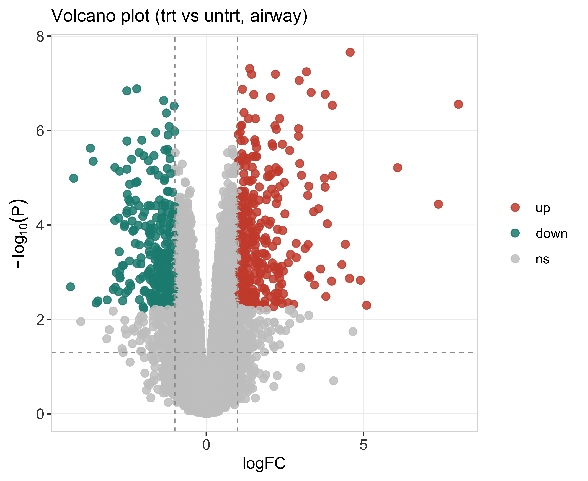
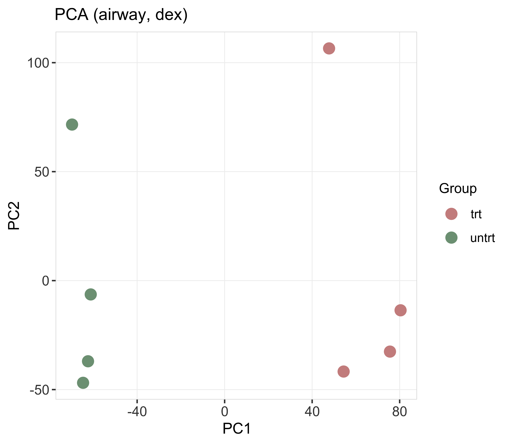
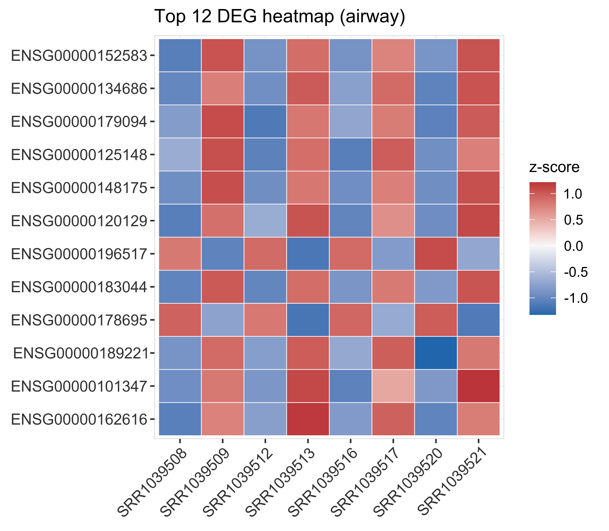
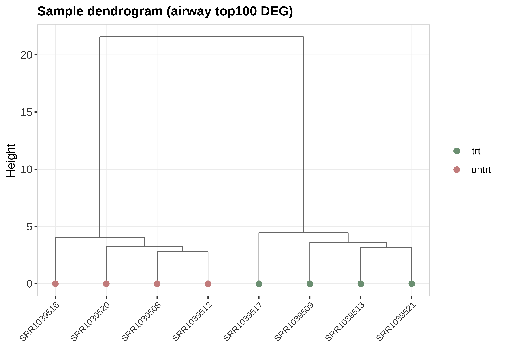
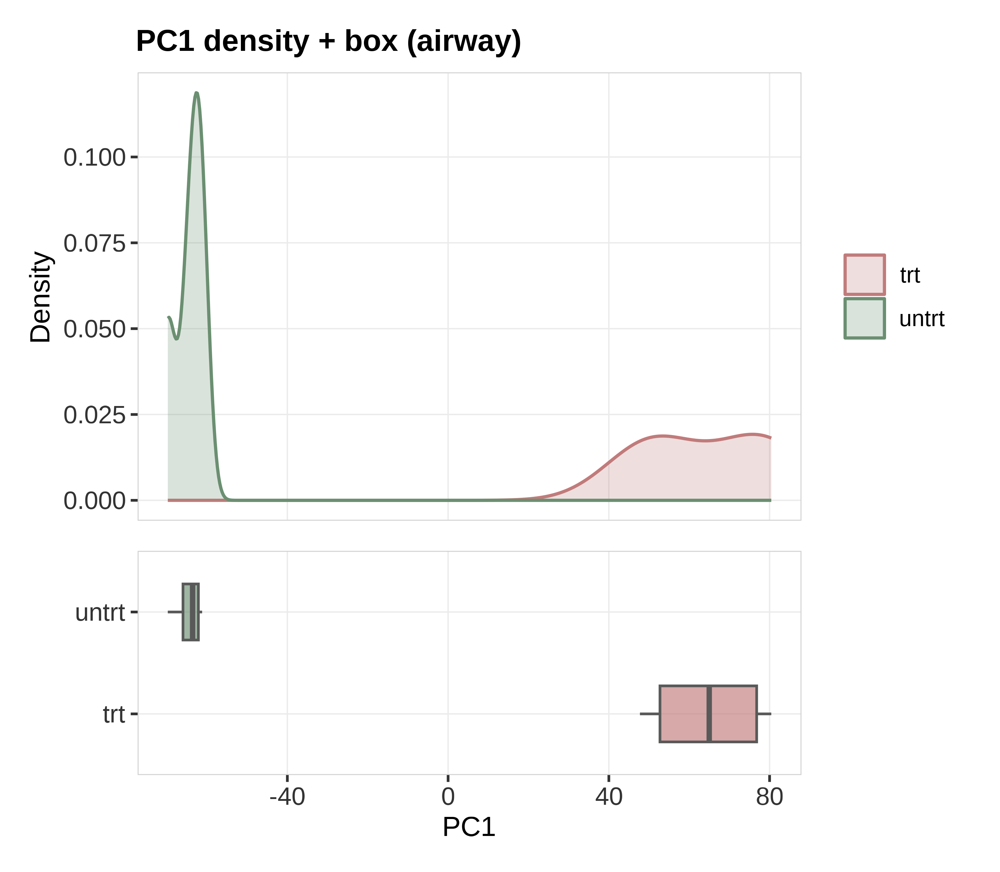
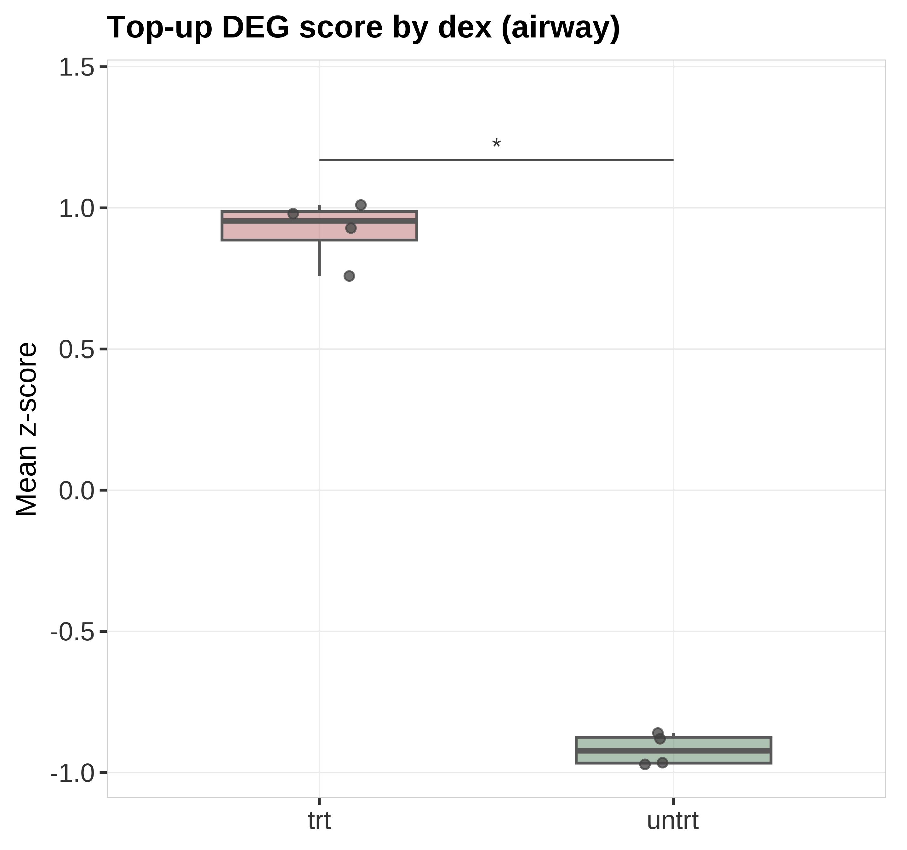

状态：PASS
已 source 本技能 脚本_scripts/: 运行转录组骨架_runRnaseqSkeleton.R
data_provenance: REAL — Bioconductor airway (8 samples, trt vs untrt).
详见 数据文件/DATA_SOURCE.md 与 PROVENANCE.json。
"skill","stage","n_rows","n_cols","n_samples","group_source","toy","data_provenance","accession","sourced_skill_scripts","notes","checked_at" "RNA-seq","post",63677,8,8,"airway colData$dex trt vs untrt",FALSE,"REAL","airway (Bioconductor ExperimentData)","已 source 本技能 脚本_scripts/: 运行转录组骨架_runRnaseqSkeleton.R","REAL limma-voom DEG; data_provenance=REAL","2026-07-19 19:37:01"






REAL airway limma-voom DEG: volcano + PCA + heatmap + dendrogram + PC density/box + score brackets.
生成时间：2026-07-19 19:37:05 · 报告规范：统一交付规范_DeliveryStandards · 版本 v1